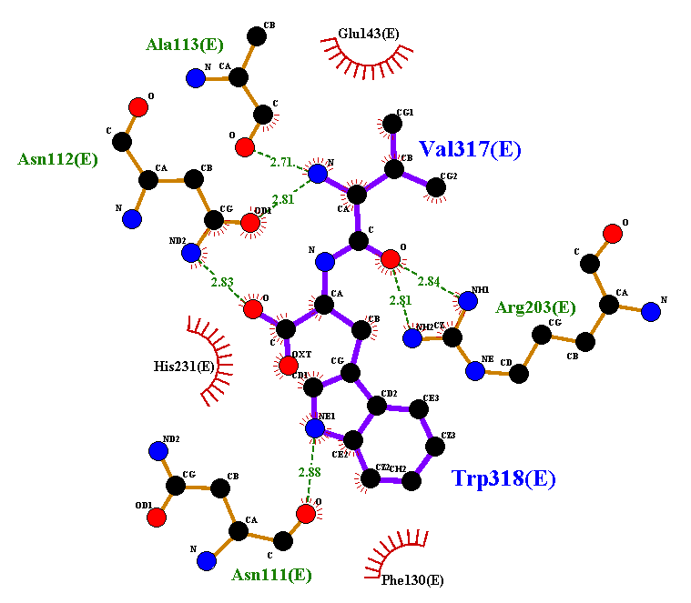
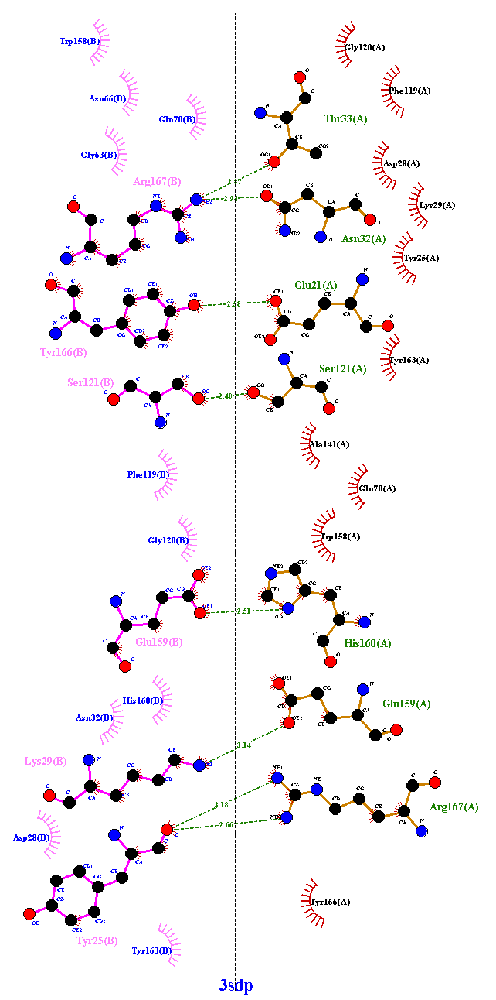
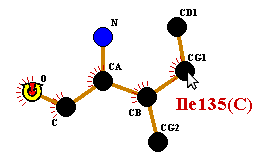
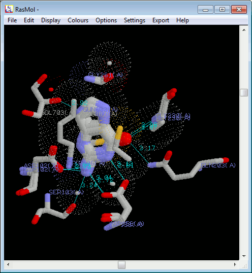
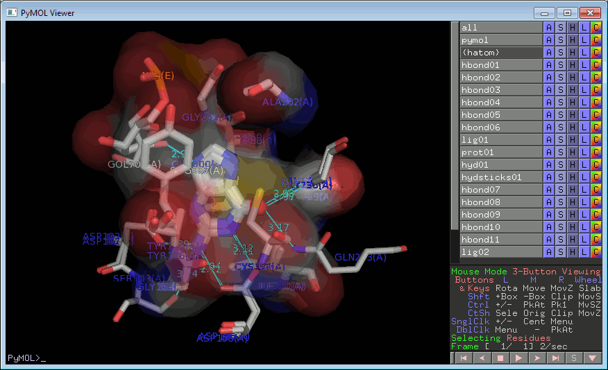
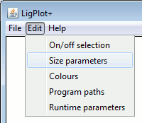
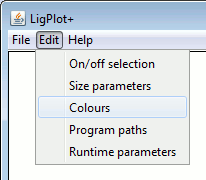

LigPlot+ v.1.3
Graphical User Interface for the LIGPLOT and DIMPLOT programs
Operating Manual
Contents

LIGPLOT of Val-Trp dipeptide
in 3tmn
|
 |
1. |
|
Introduction |
|

DIMPLOT of interface between
chains A and B in 3sdp
|
| 2. |
|
Paths and directories |
| 3. |
|
Generating a LIGPLOT/DIMPLOT diagram |
| 4. |
|
Editing the plot |
| 5. |
|
Multiple plots |
| 6. |
|
Plot parameters |
| 7. |
|
Adding missing H-bonds |
| 8. |
|
Runtime parameters |
| 9. |
|
Removing unwanted H-bonds |
| 10. |
|
Plots from structural alignments |
| 11. |
|
Structural alignment file formats |
1. Introduction
LigPlot+ is a graphical front-end to the LIGPLOT and
DIMPLOT programs. The plots generated by these programs can
be interactively edited on screen, superposed and printed.
- LIGPLOT - automatically generates schematic diagrams of
protein-ligand interactions for a given ligand in a PDB file.
- DIMPLOT - plots interactions across a selected protein-protein or
domain-domain interface.
The very first time you run LigPlot+ on your computer, you
will need to define several paths and directories so that the program
knows where to find things like PDB files, the Het Group Dictionary
and the RasMol program (if you have it). LigPlot+ will
detect that it is being run for the first time and will pop up an
entry-form, described in the section below, for you to fill in.
2. Paths and directories
The entry-form for defining paths and directories looks as shown below.
Edit the text fields as follows:
PDB paths.
PDB files are most conveniently identified simply by the 4-character
PDB code or identifier. If your system contains one or more locations
where PDB files are stored, you can define a "template" path which
will allow LIGPLOT+ to find the relevant PDB file
from its 4-character code alone. The files can be gzipped or not.
Alternatively, if you are connected to the internet when you run
LIGPLOT+, the required file can be retrieved by ftp
from a given ftp site.
The 4 characters of the PDB code in each template are represented as
abcd. These appear in the template
within square brackets.
For example, the template
C:/roman/pdbsum/pdb/pdb[abcd].ent
means that, for example, PDB code 1ral would be translated as:
C:/roman/pdbsum/pdb/pdb1ral.ent
Similarly, the ftp template
ftp://ftp.ebi.ac.uk/pub/databases/rcsb/pdb-remediated/data/structures/divided/pdb/[bc]/pdb[abcd].ent.gz
would map to PDB code 1ral as:
ftp://ftp.ebi.ac.uk/pub/databases/rcsb/pdb-remediated/data/structures/divided/pdb/ra/pdb1ral.ent.gz
Note that here the PDB files are stored in subdirectories whose names
correspond to the middle part of the PDB code (here shown as
"[bc]").
The above ftp address retrieves gzipped PDB files from the PDBe ftp
site at the EBI. A full list of possible ftp addresses is given below:
|
PDBe
|
|
ftp://ftp.ebi.ac.uk/pub/databases/rcsb/pdb-remediated/data/structures/divided/pdb/[bc]/pdb[abcd].ent.gz
|
|
PDBj
|
|
ftp://pdb.protein.osaka-u.ac.jp/v3/pub/pdb/data/structures/divided/pdb/[bc]/pdb[abcd].ent.gz
|
|
RCSB PDB
|
|
ftp://ftp.wwpdb.org/pub/pdb/data/structures/divided/pdb/[bc]/pdb[abcd].ent.gz
|
The Het Group Dictionary.
LIGPLOT+ gets its information about ligand molecules
from the Het Group Dictionary. This defines the atom names,
connectivities and bond orders of every Het Group in the PDB. You can
download a copy of this dictionary from the wwPDB at:
ftp://ftp.wwpdb.org/pub/pdb/data/monomers/components.cif
It is a good idea to download it regularly to always have an
up-to-date copy.
Record the full path and filename of the Het Group Dictionary here so
that the programs know where to find it.
SDF Dictionary. Alternatively, if your ligand definitions are
in a .sdf file, you can provide the name of your file
here. There are two important considerations:
- The file must have a .sdf extension.
- The 3-character "residue name" of the ligand, as it appears in
your PDB file(s), must be given in the molecule's description. For
example:
> <PDB_HET_ID>
PLP
The exact name of the field (in this case "PDB_HET_ID") is not
important as different people will use different conventions. The
program will look for potential identifiers and, if they match one of
the Het Group names in the PDB file will take the corresponding
molecule definition.
Temporary directory.
LIGPLOT+ needs a directory where it can puts its
temporary working files (which it deletes once it has done with
them). Use this parameter to define a directory to which you have
write-access and which LIGPLOT+ can use for its
working files.
Name of RasMol executable.
Enter the full path and name of the RasMol executable file. This will
allow you to display the 3D coords of the given LIGPLOT/DIMPLOT
diagrams. If you do not have RasMol, enter NONE here, although it is recommended that
you download and install a copy of the program.
Linux users might find it more convenient to enter the RasMol path using
the following format:
xterm -e rasmol -script
This will open up an X-term window as well as a RasMol window. The former
can be used for entering RasMol commands.
Save. Press the Save button to store your paths. If you
should need to alter the paths at some leter date, you can do so via
the Program paths menu item in the Edit menu.
3. Generating a LIGPLOT/DIMPLOT diagram
To generate a new LIGPLOT or DIMPLOT diagram, select the PDB file of interest
using File-Open-PDB file from the menu bar.
Enter the 4-character PDB code into the dialogue window that will pop
up. The program will for the PDB file using the location templates
defined in your ligplus.par file (see
Installation Instructions).
Alternatively, you can browse for a PDB file in your local directory
system by clicking the Browse button.
When the file has been loaded, you will see a summary of the ligands
and metals in the PDB file, if any, as shown below for PDB entry 1a95.
Clicking on the LIGPLOT or DIMPLOT tabs allows you to choose which of
the two programs to run.
- LIGPLOT
- Select which ligand you wish to plot from the list.
Alternatively, you can enter your own residue range in the box. The
residue range can be one of the following:
|
Example
|
|
Description
|
|
18 20 A
|
|
Residue range: start-residue-no. end-residue-no. chain-id
If the chain-id is blank it should be omitted
|
|
NAG 18 MAN 20 A
|
|
Residue names and numbers, plus chain id.
|
|
-n818 108 -n818 108 A
|
|
Where the residue name is numeric, prefix it with "-n" to indicate
that it is the residue name rather than the residue number.
|
|
"MTE" 1 " G" 2 B
|
|
Where a residue name includes leading blanks (eg as in the old
definition of the nucleic acid bases, A, C, G and T), enclose it in
quotes and include the spaces.
|
|
"-nMTE" 1 "-n G" 2 B
|
|
An alternative for the case above.
|
- To include waters on the plot, tick the checkbox next to the
"Include waters" option.
- Tick the "Filter waters" checkbox to remove waters that don't make
at least 2 H-bonds to ligand and/or protein (eg this removes
waters that interact only with another water, or with just the protein).
- DIMPLOT
- Select which protein chain pair you would like
plotted, or enter the residue ranges of the chains or domains you want
to plot. Enter each residue range as: N1-N2 C, where N1
is the start residue, N2 is the end residue, and C is
the chain id. If a domain is split, you can define it using several
residue ranges, separating each range with an ampersand. For example
1-136 A & 338-371 A
- To include waters on the plot, tick the checkbox next to the
"Include waters" option.
Then to run either program, click on the Run
button.
When the plot has been generated it will appear on screen and can now
be edited interactively, as described next.
4. Editing the plot
a. Moving residues, atoms, and text items
To move any of the objects on the plot click and drag the object using
the left mouse button.
Note, that to switch between moving whole residues and single atoms click
the Move residue/move atom button at
the bottom-right of the frame to toggle between the two modes.
Note also that the hydrophobic contact groups cannot be moved in the
Move atom mode.
b. Panning and zooming
Use the left mouse button to click-and-drag on any blank area of the
plot to pan around the plot.
Use the right mouse button to click-and-drag on any blank area of the
plot to zoom in and out of the plot.
c. Recentre
You can recentre the plot at any time by clicking on the Recentre button at the bottom left of the
LigPlot+ window.
d. Rotating residues
You can rotate a residue about any of its atoms by right-clicking on
the atom you want to pivot about. A marker will appear
over the selected atom to identify it.
|

|
|

|
To rotate about this atom, click-and-drag any other atom in the
residue. Release the button when you have reached the desired
position.
To deselect the atom, right- or left-click on any blank part of the
plot, or on any other residue.
e. Flipping about a bond
You can flip a residue, or part or a residue, about any of its bonds.
Firstly, select the bond by clicking on it with the right
mouse button. A marker will appear over the selected bond.
To flip about this bond, click with the left mouse-button on any
atom on the side of the residue to be flipped. A single click will
perform the flip. Clicking a second time on any of the flipped atoms
will reverse the flip.
To "unselect" the flip-bond, click with the right or middle mouse
button on any blank area of the plot. The marker will disappear.
f. Editing text labels
You can edit any of the text labels on the plot.
Select the text item by right-clicking on it. A box containing the
text string will appear. You can edit the text as required. Click the
OK button to accept the new version, or
the Cancel button to retain the
previous text label.
5. Multiple plots
You can edit several related, and overlaid, plots at the same, moving
their components independently and switching between them. The
currently active plot is shown in full colour in the foreground, while
all background plots are greyed out. Before printing you can "switch
off" the display of the background plots such that only the foreground
plot appears. This allows you to produce a set of clean plots with
equivalent components in equivalent positions on them. Alternatively,
if you use the "Write PostScript" option, you can have each plot
printed on a separate page.
The first plot is generated in the usual way. Each subsequent plot is
fitted to the first by a sequence-based comparison of the two binding
sites. This identifies equivalent residues in the 3D structures and
these equivalences drive the generation of the second LIGPLOT. If the
program is unable to match the binding sites based on their sequences,
it tries to fit the ligands using a graph matching procedure. For very
distantly related proteins it is better to use a structural
alignment. Section 7 describes how to import such an alignment.
a. Loading additional plots
In the simplest case, additional plots are loaded/generated in the
same way as the initial plot was. Use
either File-Add
or File-Open-PDB file to fit a new
LIGPLOT on top of the current one on screen.
The new plot, when generated, will become the foreground plot; any
current plot(s) will go into the background.
The left-hand example above shows a plot of the interactions between
guanine 600 in PDB entry 2pwu and the protein residues. The right-hand
plot shows superposed on it a plot of a similar molecule (9DG) bound to
PDB entry 1q2r. The red circles and ellipses identify the residue on
the latter plot that are equivalent to the underlying residues from
the first plot.
LigPlot+ attempts, as best it can, to place
residues in the new plot on top of the equivalent residues in the old
one. It does this by first performing a simple sequence alignment
between the set of interacting residues from each structure. The
equivalenced residues in this alignment are then used to superpose the
3D coordinates from both PDB files. This may throw up more pairs of
equivalenced residues, being those that significantly overlap in the
superposition. The residue equivalences are then used to "drive" the
generation of the new LIGPLOT; the 2D locations
from the first plot restrain the positions of the corresponding
residues in the second plot.
The superposition may not always be successful if either the two
proteins are quite different, or the second ligand is very large
relative to the first.
The "Split screen" button at the bottom of the frame separates the
two (or more) plots, and arranges them in the window.
Two plots, as in the above example, are shown side by side:
The "Merge back" button will restore the plots to overlap mode.
You can change how the equivalent residues are shown on the plot by
using the On/Off parameters to switch off the red circles and,
instead, ticking the "Highlight equivalent side chains"
option. The resultant plot will look like:
Here, the equivalent residues have a red underlay beneath their bonds
and atoms. Equivalent residues engaged in hydrophobic interactions are
shown in thicker lines.
b. Moving any of the split plots relative to others
When the plots are in split-screen mode, as above, you can move one
plot relative to the other(s) by selecting the "Move plot" option from
the button at the bottom right of the screen:
You can then move any of the plots on screen by clicking and dragging
any of their components (ie atoms, bonds, text items, etc). Remember
to revert to "Move residue" mode when you're done to return to normal
editing. When you merge the plots back, the "Move plot" option is lost.
c. Selecting the active plot
When the plots are merged, you can bring any of the background plots
into the foreground either by clicking on their greyed-out label in
the top right-hand corner, or by clicking on any of their components
in the plot itself (ie atoms, bonds, text items, etc).
d. Viewing structures in RasMol or PyMOL
If you have either RasMol or PyMOL installed, and have
defined the path to the program(s) in the Paths and Directories
above (Section 2), then there will be a RasMol and/or
PyMOL button at the bottom of the frame.
Clicking on one of these buttons will pop up a RasMol or
PyMOL window containing the superposed ligands, in 3D, with
H-bonds added in cyan and atoms involved in non-bonded contacts
represented by dot surfaces (in RasMol) or transparent surfaces (in
PyMOL).
|

|
|

|
e. Switching off the background plots
For printing, you might wish to switch off the background plots. You
can do this either by choosing Edit-On/off
selection from the menu bar, or by clicking on the On/off button at the bottom of the frame.
Then, deselect the Show inactive plots
option, circled in red below.
6. Plot parameters
You can adjust a number of parameters that define the appearance of
the plot. These can be accessed either by using the Edit option in the menu bar at the top of
the LigPlot+ window, or clicking one of the buttons at the
bottom left. These are shown in the table below.
|
|
|

|
|

|
|
|
|
|
|
|
|
|
The colour options differ slightly depending on whether your plot is
a LIGPLOT or a DIMPLOT. For the former, bonds and atoms
are classified as ligand or non-ligand. For the latter,
the two classes are: interface 1 and interface 2.
If you have two or more plots overlaid, you will be asked, after
making your changes, whether the new parameters are to apply to the
currently selected plot only, or to all plots. Thus you can, say, have
the bonds or labels shown in a different colour in each plot. The
background parameters always apply to all plots.
a. On/off selection
The on/off selection dialogue allows you to switch various components
of the plot on or off. If the box is checked, that item is switched
on. The left-hand panel above shows the LIGPLOT options while
the right-hand panel contains the DIMPLOT options.
The items are grouped into:
Labels,
Atoms,
Bonds
and
Miscellaneous.
b. Sizes selection
This dialogue allows you to alter the sizes of various objects on the
plot. The sizes are given in "Ångströms" so as to relate
to the scale of the coordinates and bond lengths in the original
molecules.
The items are grouped into:
Label sizes,
Atom and residue sizes
and
Bond widths.
The left-hand panel above shows the LIGPLOT options while
the right-hand panel contains the DIMPLOT options.
c. Colour selection
This dialogue controls the colours of the objects on the plot. The
tabs give the colour selections for different item types:
Background,
Labels,
Atoms
and
Bonds.
The left-hand panel above shows the LIGPLOT options while
the right-hand panel contains the DIMPLOT options.
Note that, for ligand and non-ligand bonds there is a special extra
colour labelled "ATOM". If this "colour" is selected, the bonds will
be coloured such that each half is of the colour of the atom bonded at
that end.
7. Runtime parameters
The runtime parameters allow you to alter some of the parameters that
are used in generating the LigPlot+ diagrams. The
parameters are accessed from the Edit
option in the menu bar at the top of the LigPlot+ window.
The first two parameters relate to the HBPLUS program that
LigPlot+ uses for computing all the potential hydrogen
bonds and non-bonded contacts. These are the maximum hydrogen-acceptor
and donor-acceptor distances for defining what is a hydrogen bonds. By
increasing these values you can "bring in" additional interactions
which may be just outside the program's criteria for an H-bond.
The next parameter relates to the treatment of any CONECT records that
may be in your PDB file. The CONECT records define which atoms are
covalently bonded to one another. They are generally used for defining
the connectivity of the ligand. Sometimes, these records are incorrect
and give unfeasibly long bonds.
You can choose how the program should treat the CONECT records. The
default is to use them if they look sensible - that is, if they don't
give ridiculously long bond lengths. The second option is to ignore
these records altogether; the program will compute the ligand's
covalent bonds itself, using set distance cut-offs. The third option
is to accept all CONECT records, irrespective of the bond lengths
they give.
8. Adding missing H-bonds
The H-bonds and non-bonded contacts shown by LIGPLOT are
calculated by HBPLUS. Occasionally,
HBPLUS can miss an H-bond, particularly when it encounters a
ligand it does not recognize.
If you need your plot to have an H-bond that HBPLUS has missed, you can
add it as follows:
- Edit your PDB file and add the missing H-bonds, or non-bonded contacts,
as "HHB" and "NNB" records, respectively. These records
should come before the ATOM records in the file.
The format of each "HHB" or "NNB" record should be
formatted exactly as shown below, where the dots represent
blank spaces.
Key <----Atom 1 ---> <----Atom 2 ---> Dist
HHB...RRR.C.NNNNI.AAAA.....RRR.C.NNNNI.AAAA....DDDD
|
where
|
|
HHB |
|
defines the record type: HHB for H-bonds, NNB for
non-bonded contacts
|
| |
RRR |
|
is the 3-character residue name
|
| |
C |
|
is chain identifier (which may be blank)
|
| |
NNNN |
|
is the right-justified residue number (1-9999)
|
| |
I |
|
is the insertion code, or blank if none
|
| |
AAAA |
|
is the 4-character atom name in standard PDB format
|
| |
DDDD |
|
is the distance between the two atoms (to 2 places of decimals)
|
Some example lines are given below:
HHB...RRR.C.NNNNI.AAAA.....RRR.C.NNNNI.AAAA....DDDD
HHB HIS A 231 N ASP A 226 OD2 2.77
HHB HIS A 231 ND1 ASP A 226 OD1 2.76
HHB HIS A 231 NE2 THR A 1317 O 2.80
HHB THR A 1317 N ALA A 113 O 2.72
HHB ALA A 113 N PHQ A 317 O2 3.31
- After editing any required H-bonds or non-bonded contacts into your PDB
file, rerun LigPlot+ on this new PDB file.
9. Removing unwanted H-bonds
To remove any unwanted H-bonds or non-bonded contacts from your plot,
follow the steps above, but annotating the unwanted bonds by
"-HB" and "-NB" records in your PDB file,
respectively. The value you put in the "Dist" is not important
and can be "0.00".
So, for example, to remove the H-bond between the
NH2 of
Arg286(A) and the O7 of your ligand, LIG1(B), you
would add the following line to your PDB file:
-HB...RRR.C.NNNNI.AAAA.....RRR.C.NNNNI.AAAA....DDDD
-HB ARG A 286 NH2 LIG B 1 O7 0.00
10. Plots from structural alignments
For distantly related proteins it may be difficult for
LigPlot+ to reliably identify equivalent residues in the
binding sites. Thus an overlaid plot of two or more structures might
not give a good alignment.
One way to help the program is to supply it with a structural
alignment between the proteins, letting it know which residues are
equivalent in 3D.
At present, LigPlot+ only accepts structural alignments in
the following formats:
- CORA format (ie from the CATH team's CORA program)
- CAF format (also from the CATH team's CORA program)
- Multiple FASTA format
The formats are described later.
Import the alignment
Import using File-Import from the menu bar.
Locate the appropriate .cora, .caf or .fasta file
and Open it.
A pop-up window will show you the list of PDB codes in the file and
allow you to select which one you want to plot first.
After the first plot has been generated, you can add others on top of
it via either File-Add
or File-Open-PDB file.
11. Structural alignment file formats
The following are the structural alignment file formats currently
accepted by LigPlot+:
1. CORA format (.cora or .aln)
The format must be CORA v.1.1, which is as follows:
#FM CORA_FORMAT 1.1
3
6insE0 1igl00 1bqt00
73
1 0 1 0 0 0 1 A 0 0 0 0 0 0 0 0
2 0 1 0 0 0 2 Y 0 0 0 0 0 0 0 0
3 0 2 1B F 0 3 R 0 0 0 0 0 0 0 0
4 0 3 2B V H 4 P 0 1 G 0 0 1 0 2
5 1 3 3B N H 5 S 0 2 P 0 0 1 0 6
6 0 3 4B Q H 6 E 0 3 E 0 0 1 0 2
7 2 3 5B H H 7 T 0 4 T 0 0 1 0 5
---------+---------+---------+---------+---------+---------+---------+
1234567890123456789012345678901234567890123456789012345678901234567890
1 2 3 4 5 6 7
2. CAF format (.caf)
This is one of the formats output by the CATHEDRAL structural
alignment program.
HH CATHEDRAL Alignment 2.02
CC Date: Tue Feb 22 21:07:49 2011
CC Author: cathedral
CC Protein1 Protein2 Len1 Len2 Score Align %Ov %Seq RMSD
RR 1byq 2wi7 213 209 93.05 208 97 99 1.38
RR 1byq 3d36 213 121 72.64 115 53 17 9.95
RR 2wi7 3d36 209 121 72.58 114 54 16 9.68
1 11 21 31 41 51
pdb|3d36 --------------------VDIQATLAPFSVIGEREKFRQCLLNVMKNAIEAMPN----
pdb|3d36 SSSSS HHHHHHHHHHHHHHHHH
pdb|1byq PMEEEEVETFAFQAEIAQLMSLIINTFYS-------NK-EIFLRELISNSSDALDKIRYE
pdb|1byq SSSSS HHHHHHHHHHHH HHHHHHHHHHHHHHHHHHHH
pdb|2wi7 -----EVETFAFQAEIAQLMSLIINTFYS-------NK-EIFLRELISNSSDALDKIRYE
pdb|2wi7 SSSS HHHHHHHHHHHH HHHHHHHHHHHHHHHHHHHH
...............::::::::: :: :::::::::*:::*:::....
---------+---------+---------+---------+---------+---------+---------+
1234567890123456789012345678901234567890123456789012345678901234567890
1 2 3 4 5 6 7
- Header information - not used by LigPlot+
All-against-all structural similarity statistics.
- The alignment given in chunks, with 2 lines per entry: the first
gives the amino acid sequence of the protein and the second gives the
secondary structure (which is not used by LigPlot+).
3. Multiple FASTA format (.fasta)
The standard FASTA multiple alignment format:
>pdb|3d36
--------------------VDIQATLAPFSVIGEREKFRQCLLNVMKNAIEAMPN----
------------GGTLQVYVSI---DNGRVLIRIADTGVGMTKEQLERLGEPYFTTKGVK
G---------------TGLGMMVVYRIIES-MNGTIRIESEIH-----------------
----------------KGTTVSIYLPLAS-------------------------------
-------------
>pdb|1z5a
----------KEKFTSLSPAEFFKRNPELAGFPNPARALYQTVRELIENSLDATDVHGI-
------------LPNIKITIDLIDDARQIYKVNVVDNGIGIPPQEVPNAFGRVLYSSKYV
NRQTR---------GMYGLGVKAAVLYSQMHQDKPIEIETSPVNSKRIYTFKLKIDINKN
EPIIVERGSVENTRGFHGTSVAISI--PGDWPKAKSRIYEYIKRTYIITPYAEFIFKDPE
GNVTYYPRLTNKI
>pdb|1byq
PMEEEEVETFAFQAEIAQLMSLIINTFYS-------NK-EIFLRELISNSSDALDKIRYE
TLTDPSKLDSGKELHINLIPNKQD-----RTLTIVDTGIGMTKADLINNLGTIAKSGTKA
FMEALQAGADISMIGQFGVGFYSAYLVA-----EKVTVITKHNDD-EQYAWESSAG----
--GSFTVRTDTGEPMGRGTKVILHLKEDQTEYLEERRIKEIVKKHSQFI-GYPITLFVE-
-------------
The key thing here is the format of the protein name line which must
take one of the following forms:
>pdb|1z5a
>pdb|1z5aA
>pdb|1z5aA01
where "A" is the chain identifier and "01" is the domain
number.